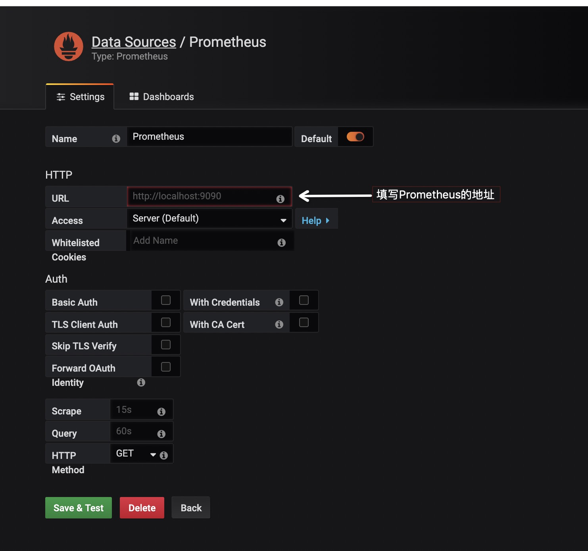

<!DOCTYPE HTML>
<html lang="zh-CN">
<head><meta name="generator" content="Hexo 3.8.0">
    <!--Setting-->
    <meta charset="UTF-8">
    <meta name="viewport" content="width=device-width, user-scalable=no, initial-scale=1.0, maximum-scale=1.0, minimum-scale=1.0">
    <meta http-equiv="X-UA-Compatible" content="IE=Edge,chrome=1">
    <meta http-equiv="Cache-Control" content="no-siteapp">
    <meta http-equiv="Cache-Control" content="no-transform">
    <meta http-equiv="pragma" content="no-cache">
    <meta http-equiv="Cache-Control" content="no-cache, must-revalidate">
    <meta http-equiv="expires" content="Mon Apr 06 2020 02:12:38 GMT+0800 (CST)">
    <meta name="renderer" content="webkit|ie-comp|ie-stand">
    <meta name="apple-mobile-web-app-capable" content="周立的博客 - 关注Spring Cloud、Docker">
    <meta name="apple-mobile-web-app-status-bar-style" content="black">
    <meta name="format-detection" content="telephone=no,email=no,adress=no">
    <meta name="browsermode" content="application">
    <meta name="screen-orientation" content="portrait">
    <meta name="theme-version" content="1.2.3">
    <meta name="root" content="/">
    
    <!--SEO-->

    <meta name="keywords" content="Spring Boot,监控,Actuator">


    <meta name="description" content="
TIPS
本文基于Spring Boot 2.1.4，理论支持Spring Boot 2.x所有版本

众所周知，Spring Boot有个子项目Spring Boot Actuator，它为应用提供了强大的监控能力。从Spring Boot 2.0开始，Actuator将底层改为Micro...">


<meta name="robots" content="all">
<meta name="google" content="all">
<meta name="googlebot" content="all">
<meta name="verify" content="all">
    <!--Title-->


<title>Spring Boot 2.x监控数据可视化(Actuator + Prometheus + Grafana手把手) | 周立的博客 - 关注Spring Cloud、Docker</title>


    <link rel="alternate" href="../../atom.html" title="周立的博客 - 关注Spring Cloud、Docker" type="application/atom+xml">


    

    


<link rel="stylesheet" href="../../static/css/bootstrap.min-271a649e0635d6fa1b.css">
<link rel="stylesheet" href="../../static/css/font-awesome.min-ac2bebcf7fb5b26.css">
<link rel="stylesheet" href="../../static/css/style-6f3c140f6eee20e6591da00ec0.css">


    


    <script>
        var _hmt = _hmt || [];
        (function() {
            var hm = document.createElement("script");
            hm.src = "https://hm.baidu.com/hm.js?13766878cde148282622871dd245a973";
            var s = document.getElementsByTagName("script")[0];
            s.parentNode.insertBefore(hm, s);
        })();
    </script>


    

</head>

</html>
<!--[if lte IE 8]>
<style>
    html{ font-size: 1em }
</style>
<![endif]-->
<!--[if lte IE 9]>
<div style="ie">你使用的浏览器版本过低，为了你更好的阅读体验，请更新浏览器的版本或者使用其他现代浏览器，比如Chrome、Firefox、Safari等。</div>
<![endif]-->

<body>
    
    <nav class="main-navigation">
    <div class="container">
        <div class="row clearfix">
            <div class="col-md-12 column">
                <nav class="navbar navbar-default" style="background-color:#fff;border:0;margin-bottom:0" role="navigation">
                    <div class="navbar-header">
                        <button type="button" class="navbar-toggle" data-toggle="collapse" data-target="#navbar-collapse-1">
                            <span class="sr-only">切</span>
                            <span class="icon-bar"></span>
                            <span class="icon-bar"></span>
                            <span class="icon-bar"></span>
                        </button>
                        <a class="logo" href="../../index.html">
                            周立的博客
                        </a>
                    </div>

                    <div class="collapse navbar-collapse" style="border:0;" id="navbar-collapse-1">
                        <ul class="nav navbar-nav">
                            
                                
                                    <li>
                                        <a href="../../about.html" target="_blank">
                                            <i class="fa fa-user"></i>
                                            关于我
                                        </a>
                                    </li>
                                
                            
                                
                                    <li>
                                        <a href="../../archives.html" target="_blank">
                                            <i class="fa fa-archive"></i>
                                            归档
                                        </a>
                                    </li>
                                
                            
                                
                                    <li class="dropdown">
                                        <a href="#" class="dropdown-toggle" data-toggle="dropdown" data-hover="dropdown">
                                            <i class="fa fa-fire"></i>
                                            系列课程
                                            <strong class="caret"></strong>
                                        </a>
                                        <ul class="dropdown-menu">
                                            
                                                <li>
                                                    <a href="../../docker/00-docker-lession-index.html" target="_blank">
                                                        <i class="fa "></i>
                                                        Docker系列教程
                                                    </a>
                                                </li>
                                            
                                                <li>
                                                    <a href="../../spring-cloud/spring-cloud-index.html" target="_blank">
                                                        <i class="fa "></i>
                                                        Spring Cloud系列教程
                                                    </a>
                                                </li>
                                            
                                                <li>
                                                    <a href="../spring-boot-index.html" target="_blank">
                                                        <i class="fa "></i>
                                                        Spring Boot系列教程
                                                    </a>
                                                </li>
                                            
                                        </ul>
                                    </li>
                                
                            
                                
                                    <li class="dropdown">
                                        <a href="#" class="dropdown-toggle" data-toggle="dropdown" data-hover="dropdown">
                                            <i class="fa fa-book"></i>
                                            开源书
                                            <strong class="caret"></strong>
                                        </a>
                                        <ul class="dropdown-menu">
                                            
                                                <li>
                                                    <a href="../../books/rocketmq.html" target="_blank">
                                                        <i class="fa fa-rocket"></i>
                                                        RocketMQ开发者指南
                                                    </a>
                                                </li>
                                            
                                                <li>
                                                    <a href="../../books/skywalking.html" target="_blank">
                                                        <i class="fa fa-skyatlas"></i>
                                                        Skywalking 6.2.0中文文档
                                                    </a>
                                                </li>
                                            
                                        </ul>
                                    </li>
                                
                            
                                
                                    <li class="dropdown">
                                        <a href="#" class="dropdown-toggle" data-toggle="dropdown" data-hover="dropdown">
                                            <i class="fa fa-cog"></i>
                                            工具
                                            <strong class="caret"></strong>
                                        </a>
                                        <ul class="dropdown-menu">
                                            
                                                <li>
                                                    <a href="../../tools/markdown2.html" target="_blank">
                                                        <i class="fa "></i>
                                                        微信排版工具2.0
                                                    </a>
                                                </li>
                                            
                                        </ul>
                                    </li>
                                
                            
                        </ul>
                        
                            <form id="search-form" class="navbar-form navbar-right">
                                <div class="form-group input-group">
                                    <input type="text" id="local-search-input" class="form-control" placeholder="搜我...">
                                    <span class="input-group-btn">
                                        <a class="btn btn-default">
                                            <i class="fa fa-search"></i>
                                        </a>
                                    </span>
                                </div>
                                <div id="local-search-result" class="local-search-result-cls"></div>
                            </form>
                        
                    </div>
                </nav>
            </div>
        </div>
    </div>
</nav>

    <a href="javascript:;" target="_blank">
        
    </a>


    <section class="content-wrap">
        <div class="container">
            <div class="row">
                <main class="col-md-8 main-content m-post">
                    

<p id="process"></p>
<article class="post">
    <div class="post-head">
        <h1 id="Spring Boot 2.x监控数据可视化(Actuator + Prometheus + Grafana手把手)">
            
                Spring Boot 2.x监控数据可视化(Actuator + Prometheus + Grafana手把手)
            
        </h1>
        <div class="post-meta">
    
        <span class="categories-meta fa-wrap">
            <i class="fa fa-folder-open-o"></i>
            <a class="category-link" href="javascript:;">Spring Boot</a>
        </span>
    

    
        <span class="fa-wrap">
            <i class="fa fa-tags"></i>
            <span class="tags-meta">
                
                    <a class="tag-link" href="javascript:;">Actuator</a> <a class="tag-link" href="javascript:;">Spring Boot</a> <a class="tag-link" href="../../tags/监控/index.html">监控</a>
                
            </span>
        </span>
    

    
        
        <span class="fa-wrap">
            <i class="fa fa-clock-o"></i>
            <span class="date-meta">2019/04/23</span>
        </span>
        
            <span class="fa-wrap">
                <i class="fa fa-eye"></i>
                <span id="busuanzi_value_page_pv"></span>
            </span>
        
    
</div>
        
        
    </div>
    
    <div class="post-body post-content" id="post-content">
        
    <div class="toc-article">
        <strong>
            目录
        </strong>
        <div class="toc-content">
            <ol class="toc"><li class="toc-item toc-level-2"><a class="toc-link" href="#编码"><span class="toc-text">编码</span></a><ol class="toc-child"><li class="toc-item toc-level-3"><a class="toc-link" href="#编写代码"><span class="toc-text">编写代码</span></a></li><li class="toc-item toc-level-3"><a class="toc-link" href="#测试"><span class="toc-text">测试</span></a></li></ol></li><li class="toc-item toc-level-2"><a class="toc-link" href="#对接Prometheus"><span class="toc-text">对接Prometheus</span></a><ol class="toc-child"><li class="toc-item toc-level-3"><a class="toc-link" href="#官方网站"><span class="toc-text">官方网站</span></a></li><li class="toc-item toc-level-3"><a class="toc-link" href="#安装Prometheus"><span class="toc-text">安装Prometheus</span></a></li><li class="toc-item toc-level-3"><a class="toc-link" href="#测试-1"><span class="toc-text">测试</span></a></li></ol></li><li class="toc-item toc-level-2"><a class="toc-link" href="#Grafana可视化"><span class="toc-text">Grafana可视化</span></a><ol class="toc-child"><li class="toc-item toc-level-3"><a class="toc-link" href="#官方网站-1"><span class="toc-text">官方网站</span></a></li><li class="toc-item toc-level-3"><a class="toc-link" href="#安装Grafana"><span class="toc-text">安装Grafana</span></a></li><li class="toc-item toc-level-3"><a class="toc-link" href="#配置"><span class="toc-text">配置</span></a></li><li class="toc-item toc-level-3"><a class="toc-link" href="#创建监控Dashboard"><span class="toc-text">创建监控Dashboard</span></a></li><li class="toc-item toc-level-3"><a class="toc-link" href="#Dashboard市场"><span class="toc-text">Dashboard市场</span></a></li><li class="toc-item toc-level-3"><a class="toc-link" href="#比较好用的Dashboard"><span class="toc-text">比较好用的Dashboard</span></a></li><li class="toc-item toc-level-3"><a class="toc-link" href="#告警"><span class="toc-text">告警</span></a></li></ol></li><li class="toc-item toc-level-2"><a class="toc-link" href="#配套代码"><span class="toc-text">配套代码</span></a></li></ol>
        </div>
    </div>


        <blockquote>
<p><strong>TIPS</strong></p>
<p>本文基于Spring Boot 2.1.4，理论支持Spring Boot 2.x所有版本</p>
</blockquote>
<p>众所周知，Spring Boot有个子项目Spring Boot Actuator，它为应用提供了强大的监控能力。从Spring Boot 2.0开始，Actuator将底层改为Micrometer，提供了更强、更灵活的监控能力。Micrometer是一个监控门面，可以类比成监控界的 <code>Slf4j</code> 。</p>
<p>借助Micrometer，应用能够对接各种监控系统，例如：</p>
<ul>
<li><a href="javascript:;" target="_blank" rel="noopener">AppOptics</a></li>
<li><a href="javascript:;" target="_blank" rel="noopener">Atlas</a></li>
<li><a href="javascript:;" target="_blank" rel="noopener">Datadog</a></li>
<li><a href="javascript:;" target="_blank" rel="noopener">Dynatrace</a></li>
<li><a href="javascript:;" target="_blank" rel="noopener">Elastic</a></li>
<li><a href="javascript:;" target="_blank" rel="noopener">Ganglia</a></li>
<li><a href="javascript:;" target="_blank" rel="noopener">Graphite</a></li>
<li><a href="javascript:;" target="_blank" rel="noopener">Humio</a></li>
<li><a href="javascript:;" target="_blank" rel="noopener">Influx</a></li>
<li><a href="javascript:;" target="_blank" rel="noopener">JMX</a></li>
<li><a href="javascript:;" target="_blank" rel="noopener">KairosDB</a></li>
<li><a href="javascript:;" target="_blank" rel="noopener">New Relic</a></li>
<li><a href="javascript:;" target="_blank" rel="noopener">Prometheus</a></li>
<li><a href="javascript:;" target="_blank" rel="noopener">SignalFx</a></li>
<li><a href="javascript:;" target="_blank" rel="noopener">Simple (in-memory)</a></li>
<li><a href="javascript:;" target="_blank" rel="noopener">StatsD</a></li>
<li><a href="javascript:;" target="_blank" rel="noopener">Wavefront</a></li>
</ul>
<p>下面演示如何对接 <code>Prometheus</code> ，并使用 <code>Grafana</code> 实现数据的可视化。</p>
<blockquote>
<p><strong>TIPS</strong></p>
<p>童鞋们对Prometheus或Grafana不熟悉也没关系，本文是手把手文章，按步骤操作即可。</p>
</blockquote>
<h2 id="编码"><a href="#编码" class="headerlink" title="编码"></a>编码</h2><h3 id="编写代码"><a href="#编写代码" class="headerlink" title="编写代码"></a>编写代码</h3><ul>
<li><p>加依赖</p>
<figure class="highlight xml"><table><tr><td class="gutter"><pre><span class="line">1</span><br><span class="line">2</span><br><span class="line">3</span><br><span class="line">4</span><br><span class="line">5</span><br><span class="line">6</span><br><span class="line">7</span><br><span class="line">8</span><br></pre></td><td class="code"><pre><span class="line"><span class="tag">&lt;<span class="name">dependency</span>&gt;</span></span><br><span class="line">  <span class="tag">&lt;<span class="name">groupId</span>&gt;</span>org.springframework.boot<span class="tag">&lt;/<span class="name">groupId</span>&gt;</span></span><br><span class="line">  <span class="tag">&lt;<span class="name">artifactId</span>&gt;</span>spring-boot-starter-actuator<span class="tag">&lt;/<span class="name">artifactId</span>&gt;</span></span><br><span class="line"><span class="tag">&lt;/<span class="name">dependency</span>&gt;</span></span><br><span class="line"><span class="tag">&lt;<span class="name">dependency</span>&gt;</span></span><br><span class="line">  <span class="tag">&lt;<span class="name">groupId</span>&gt;</span>io.micrometer<span class="tag">&lt;/<span class="name">groupId</span>&gt;</span></span><br><span class="line">  <span class="tag">&lt;<span class="name">artifactId</span>&gt;</span>micrometer-registry-prometheus<span class="tag">&lt;/<span class="name">artifactId</span>&gt;</span></span><br><span class="line"><span class="tag">&lt;/<span class="name">dependency</span>&gt;</span></span><br></pre></td></tr></table></figure>
<p>这里，我们为应用引入了 <code>micrometer-registry-prometheus</code> ，事实上，你想对接上文列表中的哪款监控系统，就写啥。例如想对接 <code>Influx</code> ，则需添加依赖 <code>micrometer-registry-influx</code> 。</p>
</li>
<li><p>写配置</p>
<figure class="highlight yaml"><table><tr><td class="gutter"><pre><span class="line">1</span><br><span class="line">2</span><br><span class="line">3</span><br><span class="line">4</span><br><span class="line">5</span><br><span class="line">6</span><br><span class="line">7</span><br><span class="line">8</span><br><span class="line">9</span><br><span class="line">10</span><br><span class="line">11</span><br><span class="line">12</span><br><span class="line">13</span><br></pre></td><td class="code"><pre><span class="line"><span class="attr">server:</span></span><br><span class="line"><span class="attr">  port:</span> <span class="number">8080</span></span><br><span class="line"><span class="attr">spring:</span></span><br><span class="line"><span class="attr">  application:</span></span><br><span class="line"><span class="attr">    name:</span> <span class="string">prometheus-test</span></span><br><span class="line"><span class="attr">management:</span></span><br><span class="line"><span class="attr">  endpoints:</span></span><br><span class="line"><span class="attr">    web:</span></span><br><span class="line"><span class="attr">      exposure:</span></span><br><span class="line"><span class="attr">        include:</span> <span class="string">'prometheus'</span></span><br><span class="line"><span class="attr">  metrics:</span></span><br><span class="line"><span class="attr">    tags:</span></span><br><span class="line"><span class="attr">      application:</span> <span class="string">$&#123;spring.application.name&#125;</span></span><br></pre></td></tr></table></figure>
<p>如配置所示，指定应用名为 <code>prometheus-test</code> ，并将 <code>Actuator</code> 的 <code>/actuator/prometheus</code> 端点暴露出来； <code>management.metrics.tags.application=prometheus-test</code> 作用是为指标设置一个名为<code>application=&quot;prometheus-test&quot;</code> 的Tag，Tag是Prometheus提供的一种能力，从而实现更加灵活的筛选。</p>
</li>
</ul>
<h3 id="测试"><a href="#测试" class="headerlink" title="测试"></a>测试</h3><ul>
<li><p>启动应用</p>
</li>
<li><p>访问 <code>http://localhost:8080/actuator/prometheus</code> 可获得类似如下的结果：</p>
<figure class="highlight plain"><table><tr><td class="gutter"><pre><span class="line">1</span><br><span class="line">2</span><br><span class="line">3</span><br><span class="line">4</span><br><span class="line">5</span><br><span class="line">6</span><br><span class="line">7</span><br><span class="line">8</span><br><span class="line">9</span><br><span class="line">10</span><br><span class="line">11</span><br><span class="line">12</span><br><span class="line">13</span><br><span class="line">14</span><br><span class="line">15</span><br><span class="line">16</span><br><span class="line">17</span><br><span class="line">18</span><br><span class="line">19</span><br><span class="line">20</span><br><span class="line">21</span><br><span class="line">22</span><br><span class="line">23</span><br><span class="line">24</span><br><span class="line">25</span><br><span class="line">26</span><br><span class="line">27</span><br><span class="line">28</span><br><span class="line">29</span><br><span class="line">30</span><br><span class="line">31</span><br><span class="line">32</span><br><span class="line">33</span><br><span class="line">34</span><br><span class="line">35</span><br><span class="line">36</span><br><span class="line">37</span><br><span class="line">38</span><br><span class="line">39</span><br><span class="line">40</span><br><span class="line">41</span><br><span class="line">42</span><br><span class="line">43</span><br><span class="line">44</span><br><span class="line">45</span><br><span class="line">46</span><br><span class="line">47</span><br><span class="line">48</span><br><span class="line">49</span><br><span class="line">50</span><br><span class="line">51</span><br><span class="line">52</span><br><span class="line">53</span><br><span class="line">54</span><br><span class="line">55</span><br><span class="line">56</span><br><span class="line">57</span><br><span class="line">58</span><br><span class="line">59</span><br><span class="line">60</span><br><span class="line">61</span><br><span class="line">62</span><br><span class="line">63</span><br><span class="line">64</span><br><span class="line">65</span><br><span class="line">66</span><br><span class="line">67</span><br><span class="line">68</span><br><span class="line">69</span><br><span class="line">70</span><br><span class="line">71</span><br><span class="line">72</span><br><span class="line">73</span><br><span class="line">74</span><br><span class="line">75</span><br><span class="line">76</span><br><span class="line">77</span><br><span class="line">78</span><br><span class="line">79</span><br><span class="line">80</span><br><span class="line">81</span><br><span class="line">82</span><br><span class="line">83</span><br><span class="line">84</span><br><span class="line">85</span><br><span class="line">86</span><br><span class="line">87</span><br><span class="line">88</span><br><span class="line">89</span><br><span class="line">90</span><br><span class="line">91</span><br><span class="line">92</span><br><span class="line">93</span><br><span class="line">94</span><br><span class="line">95</span><br><span class="line">96</span><br><span class="line">97</span><br><span class="line">98</span><br><span class="line">99</span><br><span class="line">100</span><br><span class="line">101</span><br><span class="line">102</span><br><span class="line">103</span><br><span class="line">104</span><br><span class="line">105</span><br><span class="line">106</span><br><span class="line">107</span><br><span class="line">108</span><br><span class="line">109</span><br><span class="line">110</span><br><span class="line">111</span><br><span class="line">112</span><br><span class="line">113</span><br><span class="line">114</span><br><span class="line">115</span><br><span class="line">116</span><br><span class="line">117</span><br><span class="line">118</span><br><span class="line">119</span><br><span class="line">120</span><br><span class="line">121</span><br><span class="line">122</span><br><span class="line">123</span><br><span class="line">124</span><br><span class="line">125</span><br><span class="line">126</span><br><span class="line">127</span><br><span class="line">128</span><br><span class="line">129</span><br><span class="line">130</span><br><span class="line">131</span><br><span class="line">132</span><br><span class="line">133</span><br><span class="line">134</span><br><span class="line">135</span><br><span class="line">136</span><br><span class="line">137</span><br><span class="line">138</span><br><span class="line">139</span><br><span class="line">140</span><br><span class="line">141</span><br><span class="line">142</span><br><span class="line">143</span><br><span class="line">144</span><br><span class="line">145</span><br><span class="line">146</span><br><span class="line">147</span><br><span class="line">148</span><br><span class="line">149</span><br><span class="line">150</span><br><span class="line">151</span><br><span class="line">152</span><br><span class="line">153</span><br><span class="line">154</span><br><span class="line">155</span><br><span class="line">156</span><br><span class="line">157</span><br><span class="line">158</span><br><span class="line">159</span><br><span class="line">160</span><br><span class="line">161</span><br><span class="line">162</span><br><span class="line">163</span><br><span class="line">164</span><br><span class="line">165</span><br></pre></td><td class="code"><pre><span class="line"># HELP jvm_memory_used_bytes The amount of used memory</span><br><span class="line"># TYPE jvm_memory_used_bytes gauge</span><br><span class="line">jvm_memory_used_bytes&#123;application=&quot;prometheus-test&quot;,area=&quot;heap&quot;,id=&quot;PS Old Gen&quot;,&#125; 2.1193976E7</span><br><span class="line">jvm_memory_used_bytes&#123;application=&quot;prometheus-test&quot;,area=&quot;nonheap&quot;,id=&quot;Metaspace&quot;,&#125; 3.8791688E7</span><br><span class="line">jvm_memory_used_bytes&#123;application=&quot;prometheus-test&quot;,area=&quot;heap&quot;,id=&quot;PS Survivor Space&quot;,&#125; 0.0</span><br><span class="line">jvm_memory_used_bytes&#123;application=&quot;prometheus-test&quot;,area=&quot;nonheap&quot;,id=&quot;Compressed Class Space&quot;,&#125; 5303976.0</span><br><span class="line">jvm_memory_used_bytes&#123;application=&quot;prometheus-test&quot;,area=&quot;heap&quot;,id=&quot;PS Eden Space&quot;,&#125; 8.2574816E7</span><br><span class="line">jvm_memory_used_bytes&#123;application=&quot;prometheus-test&quot;,area=&quot;nonheap&quot;,id=&quot;Code Cache&quot;,&#125; 8693824.0</span><br><span class="line"># HELP tomcat_global_received_bytes_total  </span><br><span class="line"># TYPE tomcat_global_received_bytes_total counter</span><br><span class="line">tomcat_global_received_bytes_total&#123;application=&quot;prometheus-test&quot;,name=&quot;http-nio-8080&quot;,&#125; 0.0</span><br><span class="line"># HELP jvm_threads_daemon_threads The current number of live daemon threads</span><br><span class="line"># TYPE jvm_threads_daemon_threads gauge</span><br><span class="line">jvm_threads_daemon_threads&#123;application=&quot;prometheus-test&quot;,&#125; 20.0</span><br><span class="line"># HELP tomcat_sessions_alive_max_seconds  </span><br><span class="line"># TYPE tomcat_sessions_alive_max_seconds gauge</span><br><span class="line">tomcat_sessions_alive_max_seconds&#123;application=&quot;prometheus-test&quot;,&#125; 0.0</span><br><span class="line"># HELP jvm_buffer_memory_used_bytes An estimate of the memory that the Java virtual machine is using for this buffer pool</span><br><span class="line"># TYPE jvm_buffer_memory_used_bytes gauge</span><br><span class="line">jvm_buffer_memory_used_bytes&#123;application=&quot;prometheus-test&quot;,id=&quot;mapped&quot;,&#125; 0.0</span><br><span class="line">jvm_buffer_memory_used_bytes&#123;application=&quot;prometheus-test&quot;,id=&quot;direct&quot;,&#125; 90112.0</span><br><span class="line"># HELP jvm_threads_states_threads The current number of threads having NEW state</span><br><span class="line"># TYPE jvm_threads_states_threads gauge</span><br><span class="line">jvm_threads_states_threads&#123;application=&quot;prometheus-test&quot;,state=&quot;runnable&quot;,&#125; 9.0</span><br><span class="line">jvm_threads_states_threads&#123;application=&quot;prometheus-test&quot;,state=&quot;new&quot;,&#125; 0.0</span><br><span class="line">jvm_threads_states_threads&#123;application=&quot;prometheus-test&quot;,state=&quot;terminated&quot;,&#125; 0.0</span><br><span class="line">jvm_threads_states_threads&#123;application=&quot;prometheus-test&quot;,state=&quot;blocked&quot;,&#125; 0.0</span><br><span class="line">jvm_threads_states_threads&#123;application=&quot;prometheus-test&quot;,state=&quot;waiting&quot;,&#125; 12.0</span><br><span class="line">jvm_threads_states_threads&#123;application=&quot;prometheus-test&quot;,state=&quot;timed-waiting&quot;,&#125; 3.0</span><br><span class="line"># HELP process_cpu_usage The &quot;recent cpu usage&quot; for the Java Virtual Machine process</span><br><span class="line"># TYPE process_cpu_usage gauge</span><br><span class="line">process_cpu_usage&#123;application=&quot;prometheus-test&quot;,&#125; 0.0030590633504868434</span><br><span class="line"># HELP logback_events_total Number of error level events that made it to the logs</span><br><span class="line"># TYPE logback_events_total counter</span><br><span class="line">logback_events_total&#123;application=&quot;prometheus-test&quot;,level=&quot;info&quot;,&#125; 7.0</span><br><span class="line">logback_events_total&#123;application=&quot;prometheus-test&quot;,level=&quot;warn&quot;,&#125; 0.0</span><br><span class="line">logback_events_total&#123;application=&quot;prometheus-test&quot;,level=&quot;trace&quot;,&#125; 0.0</span><br><span class="line">logback_events_total&#123;application=&quot;prometheus-test&quot;,level=&quot;debug&quot;,&#125; 0.0</span><br><span class="line">logback_events_total&#123;application=&quot;prometheus-test&quot;,level=&quot;error&quot;,&#125; 0.0</span><br><span class="line"># HELP tomcat_global_sent_bytes_total  </span><br><span class="line"># TYPE tomcat_global_sent_bytes_total counter</span><br><span class="line">tomcat_global_sent_bytes_total&#123;application=&quot;prometheus-test&quot;,name=&quot;http-nio-8080&quot;,&#125; 195356.0</span><br><span class="line"># HELP process_files_max_files The maximum file descriptor count</span><br><span class="line"># TYPE process_files_max_files gauge</span><br><span class="line">process_files_max_files&#123;application=&quot;prometheus-test&quot;,&#125; 10240.0</span><br><span class="line"># HELP tomcat_threads_busy_threads  </span><br><span class="line"># TYPE tomcat_threads_busy_threads gauge</span><br><span class="line">tomcat_threads_busy_threads&#123;application=&quot;prometheus-test&quot;,name=&quot;http-nio-8080&quot;,&#125; 1.0</span><br><span class="line"># HELP process_files_open_files The open file descriptor count</span><br><span class="line"># TYPE process_files_open_files gauge</span><br><span class="line">process_files_open_files&#123;application=&quot;prometheus-test&quot;,&#125; 101.0</span><br><span class="line"># HELP tomcat_sessions_active_current_sessions  </span><br><span class="line"># TYPE tomcat_sessions_active_current_sessions gauge</span><br><span class="line">tomcat_sessions_active_current_sessions&#123;application=&quot;prometheus-test&quot;,&#125; 0.0</span><br><span class="line"># HELP jvm_classes_unloaded_classes_total The total number of classes unloaded since the Java virtual machine has started execution</span><br><span class="line"># TYPE jvm_classes_unloaded_classes_total counter</span><br><span class="line">jvm_classes_unloaded_classes_total&#123;application=&quot;prometheus-test&quot;,&#125; 2.0</span><br><span class="line"># HELP jvm_memory_committed_bytes The amount of memory in bytes that is committed for the Java virtual machine to use</span><br><span class="line"># TYPE jvm_memory_committed_bytes gauge</span><br><span class="line">jvm_memory_committed_bytes&#123;application=&quot;prometheus-test&quot;,area=&quot;heap&quot;,id=&quot;PS Old Gen&quot;,&#125; 1.5466496E8</span><br><span class="line">jvm_memory_committed_bytes&#123;application=&quot;prometheus-test&quot;,area=&quot;nonheap&quot;,id=&quot;Metaspace&quot;,&#125; 4.1418752E7</span><br><span class="line">jvm_memory_committed_bytes&#123;application=&quot;prometheus-test&quot;,area=&quot;heap&quot;,id=&quot;PS Survivor Space&quot;,&#125; 1.6252928E7</span><br><span class="line">jvm_memory_committed_bytes&#123;application=&quot;prometheus-test&quot;,area=&quot;nonheap&quot;,id=&quot;Compressed Class Space&quot;,&#125; 5767168.0</span><br><span class="line">jvm_memory_committed_bytes&#123;application=&quot;prometheus-test&quot;,area=&quot;heap&quot;,id=&quot;PS Eden Space&quot;,&#125; 1.73539328E8</span><br><span class="line">jvm_memory_committed_bytes&#123;application=&quot;prometheus-test&quot;,area=&quot;nonheap&quot;,id=&quot;Code Cache&quot;,&#125; 8716288.0</span><br><span class="line"># HELP http_server_requests_seconds  </span><br><span class="line"># TYPE http_server_requests_seconds summary</span><br><span class="line">http_server_requests_seconds_count&#123;application=&quot;prometheus-test&quot;,exception=&quot;None&quot;,method=&quot;GET&quot;,outcome=&quot;SUCCESS&quot;,status=&quot;200&quot;,uri=&quot;/actuator/prometheus&quot;,&#125; 16.0</span><br><span class="line">http_server_requests_seconds_sum&#123;application=&quot;prometheus-test&quot;,exception=&quot;None&quot;,method=&quot;GET&quot;,outcome=&quot;SUCCESS&quot;,status=&quot;200&quot;,uri=&quot;/actuator/prometheus&quot;,&#125; 0.326299973</span><br><span class="line">http_server_requests_seconds_count&#123;application=&quot;prometheus-test&quot;,exception=&quot;None&quot;,method=&quot;GET&quot;,outcome=&quot;SUCCESS&quot;,status=&quot;200&quot;,uri=&quot;/**/favicon.ico&quot;,&#125; 3.0</span><br><span class="line">http_server_requests_seconds_sum&#123;application=&quot;prometheus-test&quot;,exception=&quot;None&quot;,method=&quot;GET&quot;,outcome=&quot;SUCCESS&quot;,status=&quot;200&quot;,uri=&quot;/**/favicon.ico&quot;,&#125; 0.028434427</span><br><span class="line"># HELP http_server_requests_seconds_max  </span><br><span class="line"># TYPE http_server_requests_seconds_max gauge</span><br><span class="line">http_server_requests_seconds_max&#123;application=&quot;prometheus-test&quot;,exception=&quot;None&quot;,method=&quot;GET&quot;,outcome=&quot;SUCCESS&quot;,status=&quot;200&quot;,uri=&quot;/actuator/prometheus&quot;,&#125; 0.120627904</span><br><span class="line">http_server_requests_seconds_max&#123;application=&quot;prometheus-test&quot;,exception=&quot;None&quot;,method=&quot;GET&quot;,outcome=&quot;SUCCESS&quot;,status=&quot;200&quot;,uri=&quot;/**/favicon.ico&quot;,&#125; 0.015596512</span><br><span class="line"># HELP tomcat_global_error_total  </span><br><span class="line"># TYPE tomcat_global_error_total counter</span><br><span class="line">tomcat_global_error_total&#123;application=&quot;prometheus-test&quot;,name=&quot;http-nio-8080&quot;,&#125; 0.0</span><br><span class="line"># HELP jvm_gc_max_data_size_bytes Max size of old generation memory pool</span><br><span class="line"># TYPE jvm_gc_max_data_size_bytes gauge</span><br><span class="line">jvm_gc_max_data_size_bytes&#123;application=&quot;prometheus-test&quot;,&#125; 2.863661056E9</span><br><span class="line"># HELP jvm_gc_live_data_size_bytes Size of old generation memory pool after a full GC</span><br><span class="line"># TYPE jvm_gc_live_data_size_bytes gauge</span><br><span class="line">jvm_gc_live_data_size_bytes&#123;application=&quot;prometheus-test&quot;,&#125; 2.1193976E7</span><br><span class="line"># HELP system_load_average_1m The sum of the number of runnable entities queued to available processors and the number of runnable entities running on the available processors averaged over a period of time</span><br><span class="line"># TYPE system_load_average_1m gauge</span><br><span class="line">system_load_average_1m&#123;application=&quot;prometheus-test&quot;,&#125; 3.9423828125</span><br><span class="line"># HELP process_uptime_seconds The uptime of the Java virtual machine</span><br><span class="line"># TYPE process_uptime_seconds gauge</span><br><span class="line">process_uptime_seconds&#123;application=&quot;prometheus-test&quot;,&#125; 173.424</span><br><span class="line"># HELP tomcat_sessions_expired_sessions_total  </span><br><span class="line"># TYPE tomcat_sessions_expired_sessions_total counter</span><br><span class="line">tomcat_sessions_expired_sessions_total&#123;application=&quot;prometheus-test&quot;,&#125; 0.0</span><br><span class="line"># HELP jvm_gc_pause_seconds Time spent in GC pause</span><br><span class="line"># TYPE jvm_gc_pause_seconds summary</span><br><span class="line">jvm_gc_pause_seconds_count&#123;action=&quot;end of minor GC&quot;,application=&quot;prometheus-test&quot;,cause=&quot;Metadata GC Threshold&quot;,&#125; 1.0</span><br><span class="line">jvm_gc_pause_seconds_sum&#123;action=&quot;end of minor GC&quot;,application=&quot;prometheus-test&quot;,cause=&quot;Metadata GC Threshold&quot;,&#125; 0.012</span><br><span class="line">jvm_gc_pause_seconds_count&#123;action=&quot;end of major GC&quot;,application=&quot;prometheus-test&quot;,cause=&quot;Metadata GC Threshold&quot;,&#125; 1.0</span><br><span class="line">jvm_gc_pause_seconds_sum&#123;action=&quot;end of major GC&quot;,application=&quot;prometheus-test&quot;,cause=&quot;Metadata GC Threshold&quot;,&#125; 0.045</span><br><span class="line"># HELP jvm_gc_pause_seconds_max Time spent in GC pause</span><br><span class="line"># TYPE jvm_gc_pause_seconds_max gauge</span><br><span class="line">jvm_gc_pause_seconds_max&#123;action=&quot;end of minor GC&quot;,application=&quot;prometheus-test&quot;,cause=&quot;Metadata GC Threshold&quot;,&#125; 0.012</span><br><span class="line">jvm_gc_pause_seconds_max&#123;action=&quot;end of major GC&quot;,application=&quot;prometheus-test&quot;,cause=&quot;Metadata GC Threshold&quot;,&#125; 0.045</span><br><span class="line"># HELP jvm_gc_memory_promoted_bytes_total Count of positive increases in the size of the old generation memory pool before GC to after GC</span><br><span class="line"># TYPE jvm_gc_memory_promoted_bytes_total counter</span><br><span class="line">jvm_gc_memory_promoted_bytes_total&#123;application=&quot;prometheus-test&quot;,&#125; 1.06878E7</span><br><span class="line"># HELP jvm_gc_memory_allocated_bytes_total Incremented for an increase in the size of the young generation memory pool after one GC to before the next</span><br><span class="line"># TYPE jvm_gc_memory_allocated_bytes_total counter</span><br><span class="line">jvm_gc_memory_allocated_bytes_total&#123;application=&quot;prometheus-test&quot;,&#125; 7.8713648E7</span><br><span class="line"># HELP tomcat_global_request_seconds  </span><br><span class="line"># TYPE tomcat_global_request_seconds summary</span><br><span class="line">tomcat_global_request_seconds_count&#123;application=&quot;prometheus-test&quot;,name=&quot;http-nio-8080&quot;,&#125; 19.0</span><br><span class="line">tomcat_global_request_seconds_sum&#123;application=&quot;prometheus-test&quot;,name=&quot;http-nio-8080&quot;,&#125; 0.432</span><br><span class="line"># HELP jvm_threads_live_threads The current number of live threads including both daemon and non-daemon threads</span><br><span class="line"># TYPE jvm_threads_live_threads gauge</span><br><span class="line">jvm_threads_live_threads&#123;application=&quot;prometheus-test&quot;,&#125; 24.0</span><br><span class="line"># HELP jvm_buffer_count_buffers An estimate of the number of buffers in the pool</span><br><span class="line"># TYPE jvm_buffer_count_buffers gauge</span><br><span class="line">jvm_buffer_count_buffers&#123;application=&quot;prometheus-test&quot;,id=&quot;mapped&quot;,&#125; 0.0</span><br><span class="line">jvm_buffer_count_buffers&#123;application=&quot;prometheus-test&quot;,id=&quot;direct&quot;,&#125; 11.0</span><br><span class="line"># HELP process_start_time_seconds Start time of the process since unix epoch.</span><br><span class="line"># TYPE process_start_time_seconds gauge</span><br><span class="line">process_start_time_seconds&#123;application=&quot;prometheus-test&quot;,&#125; 1.556017153576E9</span><br><span class="line"># HELP tomcat_threads_config_max_threads  </span><br><span class="line"># TYPE tomcat_threads_config_max_threads gauge</span><br><span class="line">tomcat_threads_config_max_threads&#123;application=&quot;prometheus-test&quot;,name=&quot;http-nio-8080&quot;,&#125; 200.0</span><br><span class="line"># HELP system_cpu_count The number of processors available to the Java virtual machine</span><br><span class="line"># TYPE system_cpu_count gauge</span><br><span class="line">system_cpu_count&#123;application=&quot;prometheus-test&quot;,&#125; 8.0</span><br><span class="line"># HELP tomcat_threads_current_threads  </span><br><span class="line"># TYPE tomcat_threads_current_threads gauge</span><br><span class="line">tomcat_threads_current_threads&#123;application=&quot;prometheus-test&quot;,name=&quot;http-nio-8080&quot;,&#125; 10.0</span><br><span class="line"># HELP jvm_memory_max_bytes The maximum amount of memory in bytes that can be used for memory management</span><br><span class="line"># TYPE jvm_memory_max_bytes gauge</span><br><span class="line">jvm_memory_max_bytes&#123;application=&quot;prometheus-test&quot;,area=&quot;heap&quot;,id=&quot;PS Old Gen&quot;,&#125; 2.863661056E9</span><br><span class="line">jvm_memory_max_bytes&#123;application=&quot;prometheus-test&quot;,area=&quot;nonheap&quot;,id=&quot;Metaspace&quot;,&#125; -1.0</span><br><span class="line">jvm_memory_max_bytes&#123;application=&quot;prometheus-test&quot;,area=&quot;heap&quot;,id=&quot;PS Survivor Space&quot;,&#125; 1.6252928E7</span><br><span class="line">jvm_memory_max_bytes&#123;application=&quot;prometheus-test&quot;,area=&quot;nonheap&quot;,id=&quot;Compressed Class Space&quot;,&#125; 1.073741824E9</span><br><span class="line">jvm_memory_max_bytes&#123;application=&quot;prometheus-test&quot;,area=&quot;heap&quot;,id=&quot;PS Eden Space&quot;,&#125; 1.395654656E9</span><br><span class="line">jvm_memory_max_bytes&#123;application=&quot;prometheus-test&quot;,area=&quot;nonheap&quot;,id=&quot;Code Cache&quot;,&#125; 2.5165824E8</span><br><span class="line"># HELP jvm_threads_peak_threads The peak live thread count since the Java virtual machine started or peak was reset</span><br><span class="line"># TYPE jvm_threads_peak_threads gauge</span><br><span class="line">jvm_threads_peak_threads&#123;application=&quot;prometheus-test&quot;,&#125; 29.0</span><br><span class="line"># HELP jvm_classes_loaded_classes The number of classes that are currently loaded in the Java virtual machine</span><br><span class="line"># TYPE jvm_classes_loaded_classes gauge</span><br><span class="line">jvm_classes_loaded_classes&#123;application=&quot;prometheus-test&quot;,&#125; 7936.0</span><br><span class="line"># HELP tomcat_sessions_active_max_sessions  </span><br><span class="line"># TYPE tomcat_sessions_active_max_sessions gauge</span><br><span class="line">tomcat_sessions_active_max_sessions&#123;application=&quot;prometheus-test&quot;,&#125; 0.0</span><br><span class="line"># HELP tomcat_global_request_max_seconds  </span><br><span class="line"># TYPE tomcat_global_request_max_seconds gauge</span><br><span class="line">tomcat_global_request_max_seconds&#123;application=&quot;prometheus-test&quot;,name=&quot;http-nio-8080&quot;,&#125; 0.161</span><br><span class="line"># HELP tomcat_sessions_created_sessions_total  </span><br><span class="line"># TYPE tomcat_sessions_created_sessions_total counter</span><br><span class="line">tomcat_sessions_created_sessions_total&#123;application=&quot;prometheus-test&quot;,&#125; 0.0</span><br><span class="line"># HELP tomcat_sessions_rejected_sessions_total  </span><br><span class="line"># TYPE tomcat_sessions_rejected_sessions_total counter</span><br><span class="line">tomcat_sessions_rejected_sessions_total&#123;application=&quot;prometheus-test&quot;,&#125; 0.0</span><br><span class="line"># HELP jvm_buffer_total_capacity_bytes An estimate of the total capacity of the buffers in this pool</span><br><span class="line"># TYPE jvm_buffer_total_capacity_bytes gauge</span><br><span class="line">jvm_buffer_total_capacity_bytes&#123;application=&quot;prometheus-test&quot;,id=&quot;mapped&quot;,&#125; 0.0</span><br><span class="line">jvm_buffer_total_capacity_bytes&#123;application=&quot;prometheus-test&quot;,id=&quot;direct&quot;,&#125; 90112.0</span><br><span class="line"># HELP system_cpu_usage The &quot;recent cpu usage&quot; for the whole system</span><br><span class="line"># TYPE system_cpu_usage gauge</span><br><span class="line">system_cpu_usage&#123;application=&quot;prometheus-test&quot;,&#125; 0.2523364485981308</span><br></pre></td></tr></table></figure>
<p>该端点返回的数据结构是Prometheus需要使用的。对照注释，相信大家能看懂每一项的含义。例如：</p>
<figure class="highlight plain"><table><tr><td class="gutter"><pre><span class="line">1</span><br><span class="line">2</span><br><span class="line">3</span><br></pre></td><td class="code"><pre><span class="line"># HELP jvm_memory_used_bytes The amount of used memory</span><br><span class="line"># TYPE jvm_memory_used_bytes gauge</span><br><span class="line">jvm_memory_used_bytes&#123;application=&quot;prometheus-test&quot;,area=&quot;heap&quot;,id=&quot;PS Old Gen&quot;,&#125; 2.1193976E7</span><br></pre></td></tr></table></figure>
<p>表示：<code>prometheus-test</code> 应用堆内存中的 <code>PS Old Gen</code> 区域占用的空间是 <code>2.1193976E7</code> 字节。</p>
</li>
</ul>
<h2 id="对接Prometheus"><a href="#对接Prometheus" class="headerlink" title="对接Prometheus"></a>对接Prometheus</h2><p>Prometheus是一款开源的监控 + 时序数据库 + 报警软件，由SoundCloud公司开发的。目前在CNCF基金会托管，并已成功孵化。</p>
<h3 id="官方网站"><a href="#官方网站" class="headerlink" title="官方网站"></a>官方网站</h3><ul>
<li><a href="javascript:;" target="_blank" rel="noopener">Prometheus官方网站</a></li>
<li><a href="javascript:;" target="_blank" rel="noopener">Prometheus GitHub</a></li>
</ul>
<h3 id="安装Prometheus"><a href="#安装Prometheus" class="headerlink" title="安装Prometheus"></a>安装Prometheus</h3><blockquote>
<p><strong>TIPS</strong></p>
<p>简单期间，本文使用Docker方式安装，其他方式安装请详见 <a href="javascript:;" target="_blank" rel="noopener">Prometheus安装说明</a> 。</p>
</blockquote>
<ul>
<li><p>准备配置文件，命名为<code>prometheus.yml</code> </p>
<figure class="highlight yaml"><table><tr><td class="gutter"><pre><span class="line">1</span><br><span class="line">2</span><br><span class="line">3</span><br><span class="line">4</span><br><span class="line">5</span><br><span class="line">6</span><br><span class="line">7</span><br><span class="line">8</span><br><span class="line">9</span><br><span class="line">10</span><br><span class="line">11</span><br><span class="line">12</span><br></pre></td><td class="code"><pre><span class="line"><span class="attr">scrape_configs:</span></span><br><span class="line"><span class="comment"># 任意写，建议英文，不要包含特殊字符</span></span><br><span class="line"><span class="attr">- job_name:</span> <span class="string">'spring'</span></span><br><span class="line">  <span class="comment"># 多久采集一次数据</span></span><br><span class="line"><span class="attr">  scrape_interval:</span> <span class="number">15</span><span class="string">s</span></span><br><span class="line">  <span class="comment"># 采集时的超时时间</span></span><br><span class="line"><span class="attr">  scrape_timeout:</span> <span class="number">10</span><span class="string">s</span></span><br><span class="line">  <span class="comment"># 采集的路径是啥</span></span><br><span class="line"><span class="attr">  metrics_path:</span> <span class="string">'/actuator/prometheus'</span></span><br><span class="line">  <span class="comment"># 采集服务的地址，设置成上面Spring Boot应用所在服务器的具体地址。</span></span><br><span class="line"><span class="attr">  static_configs:</span></span><br><span class="line"><span class="attr">  - targets:</span> <span class="string">['30.1.229.89:8080']</span></span><br></pre></td></tr></table></figure>
<p>这样配置后，Prometheus服务器就会自动每隔15秒请求 <code>http://30.1.229.89:8080/actuator/prometheus</code>  。更多配置项详见 <a href="javascript:;" target="_blank" rel="noopener">Prometheus Configuration官方文档</a></p>
</li>
<li><p>在<code>prometheus.yml</code> 文件所在目录执行如下命令，即可启动Prometheus</p>
<figure class="highlight shell"><table><tr><td class="gutter"><pre><span class="line">1</span><br><span class="line">2</span><br><span class="line">3</span><br></pre></td><td class="code"><pre><span class="line">docker run -d -p 9090:9090 \</span><br><span class="line">    -v $(pwd)/prometheus.yml:/etc/prometheus/prometheus.yml \</span><br><span class="line">    prom/prometheus --config.file=/etc/prometheus/prometheus.yml</span><br></pre></td></tr></table></figure>
</li>
</ul>
<h3 id="测试-1"><a href="#测试-1" class="headerlink" title="测试"></a>测试</h3><ul>
<li><p>访问<code>http://localhost:9090</code> ，可看到类似如下的界面</p>
<p></p>
</li>
<li><p>点击 <code>Insert metric at cursor</code> ，即可选择监控指标；点击 <code>Graph</code> ，即可让指标以图表方式展示；点击<code>Execute</code> 按钮，即可看到类似下图的结果：</p>
<p></p>
</li>
</ul>
<h2 id="Grafana可视化"><a href="#Grafana可视化" class="headerlink" title="Grafana可视化"></a>Grafana可视化</h2><p>至此，已经用Prometheus实现了监控数据的可视化，然而使用体验并不好。下面来用Grafana实现更友好、更贴近生产的监控可视化。</p>
<p>Grafana是一个开源的跨平台度量分析和可视化 + 告警工具。</p>
<h3 id="官方网站-1"><a href="#官方网站-1" class="headerlink" title="官方网站"></a>官方网站</h3><ul>
<li><a href="javascript:;" target="_blank" rel="noopener">Grafana官方网站</a></li>
<li><a href="javascript:;" target="_blank" rel="noopener">Grafana GitHub</a></li>
</ul>
<h3 id="安装Grafana"><a href="#安装Grafana" class="headerlink" title="安装Grafana"></a>安装Grafana</h3><blockquote>
<p><strong>TIPS</strong></p>
<p>简单期间，本文使用Docker方式安装，其他方式安装请详见 <a href="javascript:;" target="_blank" rel="noopener">Grafana安装说明</a> 。</p>
</blockquote>
<ul>
<li><p>启动</p>
<figure class="highlight shell"><table><tr><td class="gutter"><pre><span class="line">1</span><br></pre></td><td class="code"><pre><span class="line">docker run -d -p 3000:3000 grafana/grafana</span><br></pre></td></tr></table></figure>
</li>
</ul>
<h3 id="配置"><a href="#配置" class="headerlink" title="配置"></a>配置</h3><ul>
<li><p>登录：访问 <code>http://localhost:3000/login</code> ，初始账号/密码为：<code>admin/admin</code> ，登录后，即可看到类似如下的界面</p>
<p></p>
</li>
<li><p>点击<code>Add data source</code> ，即可看到类似如下的界面：</p>
<p></p>
</li>
<li><p>点击Prometheus，即可看到类似如下界面：</p>
<p></p>
</li>
<li><p>填写Prometheus的首页地址，并点击 <code>Save &amp; Test</code> </p>
</li>
</ul>
<h3 id="创建监控Dashboard"><a href="#创建监控Dashboard" class="headerlink" title="创建监控Dashboard"></a>创建监控Dashboard</h3><ul>
<li><p>点击导航栏上的 <code>+</code> 按钮，并点击Dashboard，将会看到类似如下的界面：</p>
</li>
<li><p>点击 <code>Add Query</code> ，即可看到类似如下的界面：</p>
<p></p>
<p>在白框标记的位置输入指标，指标的取值详见Spring Boot应用的 <code>/actuator/prometheus</code> 端点，例如<code>jvm_memory_used_bytes</code> 、<code>jvm_threads_states_threads</code> 、<code>jvm_threads_live_threads</code> 等，Grafana会给你较好的提示，并且支持较为复杂的计算，例如聚合、求和、平均等。如果想要绘制多个线条，可点击<code>Add Query</code> 按钮，如上图所示，笔者为图表绘制了两条线，分别代表daemon以及peak线程。</p>
</li>
<li><p>点击下图的按钮，并填入Title，即可设置图表标题。</p>
<p></p>
</li>
<li><p>按下图步骤操作，即可为Dashboard添加新的图表。</p>
<p></p>
</li>
</ul>
<h3 id="Dashboard市场"><a href="#Dashboard市场" class="headerlink" title="Dashboard市场"></a>Dashboard市场</h3><p>至此，已可用Grafana实现较为丰富的图表展示——可将关心的监控指标放置到Dashboard上，并且非常灵活！然而，这个配置的操作虽然不难，但还是挺费时间的……</p>
<p>那么是否有配置好的又强大、又通用、拿来即用的Dashboard呢？答案是肯定的！前往  <a href="javascript:;" target="_blank" rel="noopener">Grafana Lab - Dashboards</a> ，输入关键词即可搜索指定Dashboard。</p>
<p></p>
<p>如上图所示，可以找到若干款以 <code>Prometheus</code> 作为数据源，支持Micrometer的Dashboard！下面，来演示如何使用 <code>JVM(Micrometer)</code> 这个Dashboard。</p>
<blockquote>
<p>其他Dashboard使用方式大同小异，建议使用前先点击了解下详情，一般Dashboard中都会有说明。</p>
</blockquote>
<ul>
<li><p>点击 <code>JVM(Micrometer)</code> 进入Dashboard详情介绍页，如下图所示：</p>
<p></p>
<p>如图已详细描述了该Dashboard的特性、配置。其中的<code>management.metrics.tags.application</code> ，前面已经配置过了；本例也不打算演示 <code>Process memory</code> 特性，所以 <code>micrometer-jvm-extras</code> 怎么用也不打算引入了(这是该Dashboard作者为Micrometer提供的增强包，有兴趣的童鞋可自行点击过去研究)。</p>
<p>细心的童鞋会发现，该页的右上角有个 <code>4701</code> 这是一个非常重要的数字！</p>
</li>
<li><p>访问<code>http://localhost:3000</code> ，按下图步骤操作：</p>
<p></p>
</li>
<li><p>输入后即可看到类似如下的界面，选择数据源，并点击Import。</p>
<p></p>
</li>
<li><p>此时，即可看到类似如下的界面，如图所示，我们常关心的指标该Dashboard均已支持！</p>
<p></p>
</li>
</ul>
<h3 id="比较好用的Dashboard"><a href="#比较好用的Dashboard" class="headerlink" title="比较好用的Dashboard"></a>比较好用的Dashboard</h3><ul>
<li><a href="javascript:;" target="_blank" rel="noopener">JVM (Micrometer)</a></li>
<li><a href="javascript:;" target="_blank" rel="noopener">JVM (Actuator)</a></li>
<li><a href="javascript:;" target="_blank" rel="noopener">Spring Boot Statistics</a> ，注：该Dashboard可能有Bug，笔者未能直接测试成功，做了一些改动后才能正常显示。</li>
</ul>
<p>以上三款是笔者亲测较为全面、好用的Dashboard，仅供参考。</p>
<h3 id="告警"><a href="#告警" class="headerlink" title="告警"></a>告警</h3><p>Grafana支持的告警渠道非常丰富，例如邮件、钉钉、Slack、Webhook等，非常实用！比较简单，各位看官自行研究下吧。</p>
<h2 id="配套代码"><a href="#配套代码" class="headerlink" title="配套代码"></a>配套代码</h2><ul>
<li><a href="javascript:;" target="_blank" rel="noopener">GitHub</a></li>
<li><a href="javascript:;" target="_blank" rel="noopener">Gitee</a></li>
</ul>
<p>其中 <code>prometheus+grafana</code> 目录已提供Docker一键部署Prometheus + Grafana的Shell。</p>

        <h2>相关文章</h2><ul><li><a href="../../spring-cloud/finchley-3/index.html">跟我学Spring Cloud（Finchley版）-03-监控：强大的Spring Boot Actuator</a></li><li><a href="../../dubbo/spring-boot-dubbo-mock/index.html">Spring Boot、Dubbo项目Mock测试踩坑与总结</a></li><li><a href="../../other/mybatis-optional-support/index.html">我最喜欢的Mybatis 3.5新特性——Optional支持</a></li><li><a href="../banner/index.html">Spring Boot Banner自定义</a></li><li><a href="../send-email/index.html">Spring Boot 2发送邮件手把手图文教程</a></li></ul>
    </div>
    
    <div class="post-footer">
        <div class="col-sm-10">
            <div>
                <b>本文链接</b>：<a href="" target="_blank">Spring Boot 2.x监控数据可视化(Actuator + Prometheus + Grafana手把手)</a>
            </div>
            <div>
                
                    转载声明：本博客由周立创作，采用 <a href="javascript:;" target="_blank"> CC BY 3.0 CN </a> 许可协议。可自由转载、引用，但需署名作者且注明文章出处。如转载至微信公众号，请在文末添加作者公众号二维码。
                
            </div>
            <div>
                
            </div>
        </div>
        <div class="col-sm-2">
            
        </div>
    </div>
</article>

<div class="article-nav prev-next-wrap clearfix">
    
        <a target="_blank" href="../../spring-cloud/spring-cloud-stream-study/index.html" class="pre-post btn btn-default" title="Spring Cloud Stream 重点与总结">
            <i class="fa fa-angle-left fa-fw"></i><span class="hidden-lg">上一篇</span>
            <span class="hidden-xs">Spring Cloud Stream 重点与总结</span>
        </a>
    
    
        <a target="_blank" href="../../work/sonartype-deploy-mvn-depencency-to-maven-central/index.html" class="next-post btn btn-default" title="手把手教你如何将项目发布到Maven中央仓库(附步骤及常见问题解决方法)">
            <span class="hidden-lg">下一篇</span>
            <span class="hidden-xs">手把手教你如何将项目发布到Maven中央仓库(附步骤及常见问题解决方法)</span><i class="fa fa-angle-right fa-fw"></i>
        </a>
    
</div>


    <div id="comments">
        
   <p>评论系统未开启，无法评论！</p>

    </div>


                </main>
                
    <aside class="col-md-4 sidebar">
        
        <div class="widget about-me">
    <div class="row">
        <div class="col-md-5">
            
        </div>
        <div class="col-md-7">
            <a class="series-a" href="javascript:void(0)">公众号</a>
            <ul>
                <li>• 技术干货推送</li>
                <li>• 免费资料领取</li>
                <li><b>• 扫码领取更多惊喜</b></li>
            </ul>
        </div>
    </div>
    
        <div class="row">
            <div class="col-md-5">
                
            </div>
            <div class="col-md-7">
                <a class="series-a" href="javascript:void(0)">小程序</a>
                <ul>
                    <li>• 原创笔记</li>
                    <li>• 独家心法</li>
                    <li><b>• 扫码领取</b></li>
                </ul>
            </div>
        </div>
    
</div>


        
        
    <div class="ad">
        <div class="row">
            <div class="col-md-12">
                <a href="javascript:;" rel="nofollow" target="_blank">
                    
                </a>
            </div>
        </div>
    </div>


        
        <div class="widget">
    <div class="row">
        <div class="col-md-3">
            
        </div>
        <div class="col-md-9">
            <a class="series-a" target="_blank" href="../../spring-cloud/spring-cloud-index.html">Spring Cloud系列教程</a>
            <p>全面、通俗易懂的Spring Cloud教程</p>
        </div>
    </div>
    <div class="row">
        <div class="col-md-3">
            
        </div>
        <div class="col-md-9">
            <a class="series-a" target="_blank" href="javascript:;">Spring Cloud Alibaba视频教程</a>
            <p>全网唯一，你值得拥有</p>
        </div>
    </div>
    <div class="row">
        <div class="col-md-3">
            
        </div>
        <div class="col-md-9">
            <a class="series-a" target="_blank" href="../../docker/00-docker-lession-index.html">Docker系列教程</a>
            <p>Docker系列</p>
        </div>
    </div>
    <div class="row">
        <div class="col-md-3">
            
        </div>
        <div class="col-md-9">
            <a class="series-a" target="_blank" href="../spring-boot-index.html">Spring Boot系列教程</a>
            <p>Boot是基石...</p>
        </div>
    </div>
</div>


        
        
    <div class="widget">
        <h3 class="title">分类</h3>
        <ul class="category-list"><li class="category-list-item"><a class="category-list-link" href="javascript:;"><i class="fa" aria-hidden="true">Docker</i></a><span class="category-list-count">31</span></li><li class="category-list-item"><a class="category-list-link" href="javascript:;"><i class="fa" aria-hidden="true">Kubernetes</i></a><span class="category-list-count">2</span></li><li class="category-list-item"><a class="category-list-link current" href="javascript:;"><i class="fa" aria-hidden="true">Spring Boot</i></a><span class="category-list-count">6</span></li><li class="category-list-item"><a class="category-list-link" href="javascript:;"><i class="fa" aria-hidden="true">Spring Cloud</i></a><span class="category-list-count">94</span></li><li class="category-list-item"><a class="category-list-link" href="javascript:;"><i class="fa" aria-hidden="true">Spring Cloud Alibaba</i></a><span class="category-list-count">16</span></li><li class="category-list-item"><a class="category-list-link" href="javascript:;"><i class="fa" aria-hidden="true">Spring Cloud Stream</i></a><span class="category-list-count">1</span></li><li class="category-list-item"><a class="category-list-link" href="../../categories/其他/index.html"><i class="fa" aria-hidden="true">其他</i></a><span class="category-list-count">13</span></li><li class="category-list-item"><a class="category-list-link" href="../../categories/安装教程/index.html"><i class="fa" aria-hidden="true">安装教程</i></a><span class="category-list-count">7</span></li><li class="category-list-item"><a class="category-list-link" href="../../categories/工作/index.html"><i class="fa" aria-hidden="true">工作</i></a><span class="category-list-count">20</span></li></ul>
    </div>


        
        
        
        

        
    </aside>

            </div>
        </div>
    </section>
    <footer class="main-footer">
    <div class="container">
        <div class="row">
        </div>
    </div>
</footer>

<a id="back-to-top" class="icon-btn hide">
	<i class="fa fa-chevron-up"></i>
</a>


    <div class="copyright">
    <div class="container">
        <div class="row">
            <div class="col-sm-12">
                <div class="busuanzi">
    
        访问量:
        <strong id="busuanzi_value_site_pv">
            <i class="fa fa-spinner fa-spin"></i>
        </strong>
        &nbsp; | &nbsp;
        访客数:
        <strong id="busuanzi_value_site_uv">
            <i class="fa fa-spinner fa-spin"></i>
        </strong>
        &nbsp; <strong>Since 2018-12-26</strong>
    
</div>

            </div>
            <div class="col-sm-12">
                <span>Copyright &copy; 2017
                </span> |
                <span>
                    Powered by <a href="javascript:;" class="copyright-links" target="_blank" rel="nofollow">Hexo</a>
                </span> |
                <span>
                    Theme by <a href="javascript:;" class="copyright-links" target="_blank" rel="nofollow">ITMuch</a>
                </span>
            </div>
        </div>
    </div>
</div>

<script src="../../static/js/jquery.min.js"></script>
<script src="../../static/js/bootstrap.min.js"></script>
<script src="../../static/js/bootstrap-hover-dropdown.min.js"></script>

    <script src="../../static/js/search-3f4fbd0557c869ca0516ebb5f.js"></script>


    <script async="" src="../../static/js/busuanzi.pure.mini.js"></script>


<script src="../../static/js/app-da10bb3b2ae5c8348d2bd2cc3faf.js"></script>


</body>
